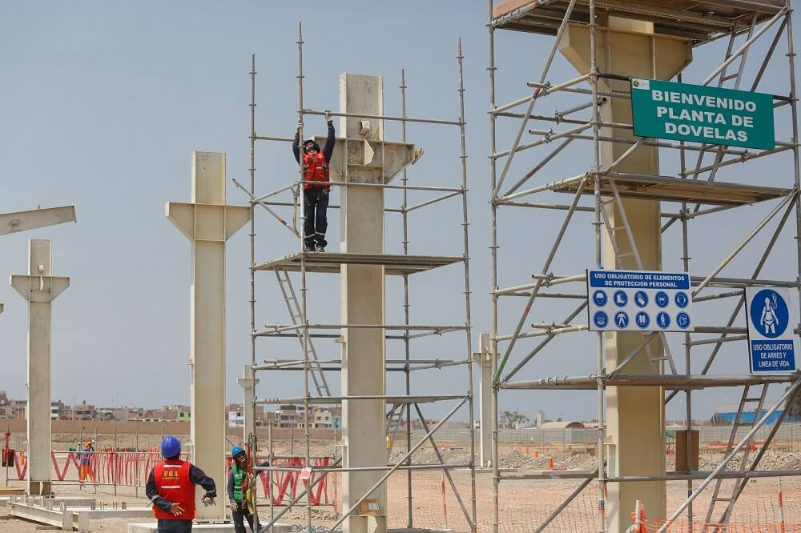
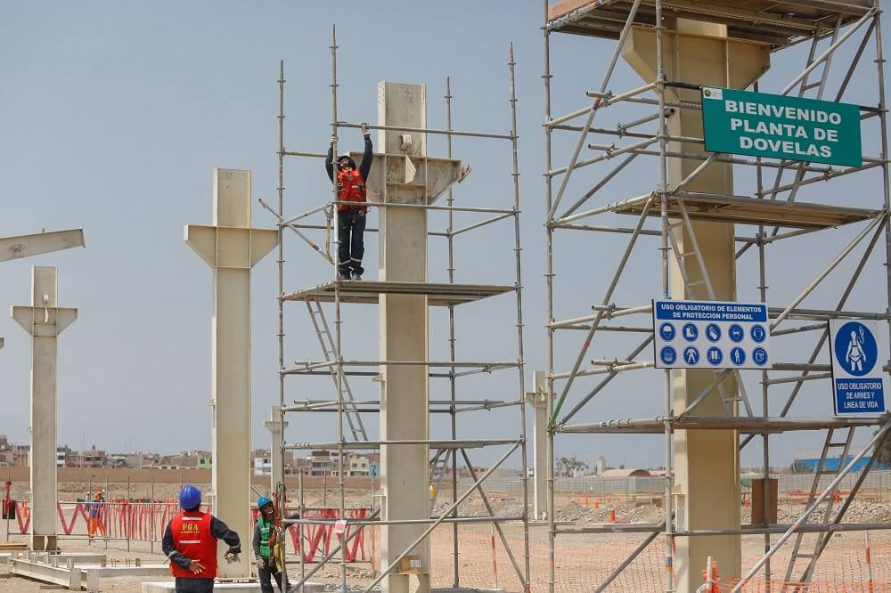

Gobierno Anuncia Nuevo Plan de Infraestructura para 2024
 

Fecha: 24 de agosto de 2024
En un evento transmitido en vivo desde el Palacio Nacional, el presidente Javier Milei ha revelado un plan de infraestructura de gran envergadura para el año 2024, destinado a transformar radicalmente el paisaje económico y social del país. Este proyecto ambicioso está valorado en 50 mil millones de dólares y tiene como objetivo modernizar y expandir una amplia gama de infraestructuras críticas.
Detalles del Plan
Modernización de Carreteras y Puentes
El plan incluye la reconstrucción y expansión de más de 2,000 kilómetros de carreteras principales y secundarios. Se renovarán puentes antiguos y se construirán nuevas conexiones para mejorar la movilidad y reducir el tiempo de viaje. Entre los proyectos destacados se encuentra la ampliación de la autopista Panamericana y la rehabilitación del Puente de la Ciudad, un punto crítico en la red de transporte nacional.
Reforma del Transporte Público
El sistema de transporte público recibirá una inversión significativa para modernizar autobuses, trenes y sistemas de metro. Se planea la introducción de una flota de autobuses eléctricos en las principales ciudades, así como la extensión de las líneas de metro en áreas metropolitanas. Se construirán nuevas estaciones y se actualizarán los sistemas de señalización para mejorar la eficiencia y la puntualidad.
Rehabilitación de Espacios Públicos
El plan contempla la renovación de parques, plazas y espacios comunitarios en ciudades grandes y pequeñas. Este componente busca no solo embellecer las áreas urbanas, sino también fomentar la cohesión social y proporcionar espacios recreativos de alta calidad para los ciudadanos. La rehabilitación incluye la instalación de áreas de juegos infantiles, zonas deportivas y jardines.
Promoción de Energías Renovables
Como parte del esfuerzo por impulsar la sostenibilidad, el plan asigna recursos para la instalación de paneles solares en edificios gubernamentales y escuelas, y para el desarrollo de parques eólicos en zonas rurales. Además, se fomentarán las inversiones privadas en proyectos de energía limpia mediante incentivos fiscales y subvenciones. La administración también planea la creación de un programa nacional para la eficiencia energética en hogares y empresas.
Impacto Económico y Social
Generación de Empleo: Se estima que el plan generará más de 100,000 empleos directos e indirectos en los próximos tres años. Los trabajos abarcan desde la construcción y ingeniería hasta la administración de proyectos y la manufactura de materiales. La creación de empleos está diseñada para impulsar las economías locales y ofrecer oportunidades en regiones que han enfrentado altos niveles de desempleo.
Mejora de la Calidad de Vida: La modernización de la infraestructura y la mejora de los espacios públicos están destinadas a elevar la calidad de vida de los ciudadanos. La reducción del tiempo de viaje y la mejora en la conectividad tienen el potencial de reducir el estrés y mejorar la productividad. Además, el acceso a espacios recreativos renovados y a un transporte público eficiente contribuye a un entorno urbano más saludable y accesible.
Beneficios Ambientales: La inversión en energías renovables y la mejora de la eficiencia energética están alineadas con los objetivos del país para reducir su huella de carbono. Se espera que estas iniciativas no solo contribuyan a la lucha contra el cambio climático, sino que también posicionen al país como un líder en sostenibilidad en la región.
Financiación y Ejecución
El plan se financiará a través de una combinación de deuda pública, asociaciones público-privadas (PPP) y fondos internacionales. El gobierno ha anunciado que se establecerán mecanismos de supervisión y auditoría para garantizar la transparencia y la correcta ejecución de los proyectos. Los contratos se adjudicarán mediante licitaciones abiertas, y se implementarán rigurosos controles para evitar corrupción y malversación.
Reacciones y Críticas
El anuncio ha sido recibido con entusiasmo por parte de la industria de la construcción y las organizaciones laborales, que ven el plan como una oportunidad para el crecimiento económico y la estabilidad laboral. Sin embargo, algunos críticos han expresado preocupaciones sobre la capacidad del gobierno para gestionar un proyecto de tal magnitud sin enfrentar problemas administrativos o financieros.
La administración ha prometido una comunicación abierta y continua con el público y los sectores involucrados para abordar cualquier desafío y asegurar el éxito del plan.